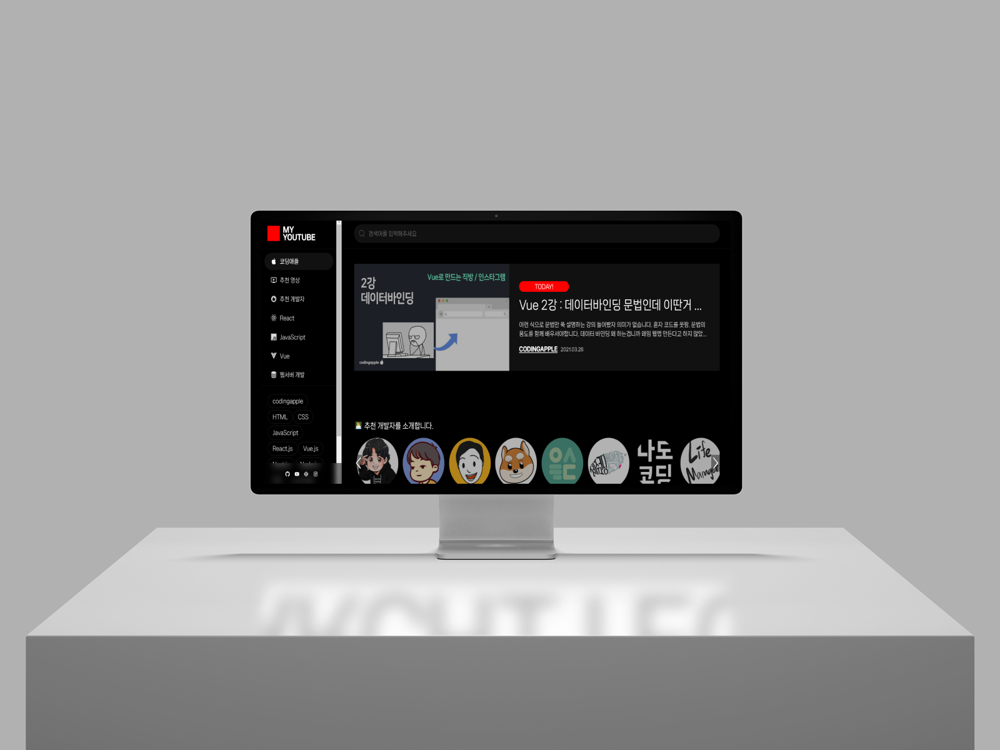

WEBSTANDARDS
Interaction
모든 프로젝트들은 웹 표준 준수와 시멘틱 마크업을 통해
웹 컨텐츠의 구조를 효과적으로 구성하고 접근성을 개선하였습니다.
미디어 쿼리를 활용해 다양한 디바이스에서 사용 가능한 반응형 웹사이트를 구현하였으며,
실무에서 자주 사용하는 JavaScript, JQuery 문법과 GSAP, Swiper 같은
JavaScript 기반 플러그인/라이브러리를
학습하여 실제 프로젝트에 적용하였습니다.
All Project
-
INSILENCEcode review
GSAP과 ScrollTrigger 플러그인을 사용해 인터렉션을 구현하는데 포커스를 두고 작업한 사이트입니다.
(PC) (적응형) (GSAP) (ScrollTrigger) (시멘틱웹)
-
 Coding YouTubecode reviewReact 프레임워크와 YouTube Data API를 사용해 API 응답을 처리하여 정보를 제공하는데 포커스를 둔 코딩 유튜브 사이트입니다.
(React) (YouTube API) (react-router-dom) (axios) (react-helmet-async) (반응형)
-
 wconcept (PC)code review
wconcept (PC)code reviewW concept 공식사이트를 PC/Mobile 2가지 버전으로 제작한 적응형 웹사이트입니다.
(PC) (적응형) (SCSS) (Swiper.js 커스텀) (시멘틱 웹)
-
wconcept (Mobile)code review
W concept 공식사이트를 PC/Mobile 2가지 버전으로 제작한 적응형 웹사이트입니다.
(Mobile) (적응형) (SCSS) (Swiper.js 커스텀) (시멘틱 웹)
-
Tosscode review
GSAP과 ScrollTrigger 플러그인을 사용해 인터렉션을 구현하는데 포커스를 두고 작업한 클론 사이트입니다.
(반응형) (GSAP) (Timeline) (Canvas) (시멘틱 웹)
-
Navercode review
IR기법, WAI-ARIA를 사용해 웹접근성에 더욱 중점을 두고 클론코딩한 사이트입니다.
(PC) (적응형) (시멘틱 웹) (IR기법) (WAI-ARIA) (웹접근성)
-
Seoul citycode review
IR기법, WAI-ARIA로 웹 접근성에 초점을 맞추고, Tab 컨트롤로 키보드 접근하는 사용자의 편의성을 높여 클론코딩한 PC 적응형 웹사이트입니다.
(PC) (적응형) (웹접근성) (Swiper 커스텀) (시멘틱 웹)